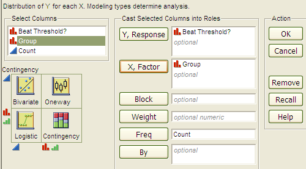
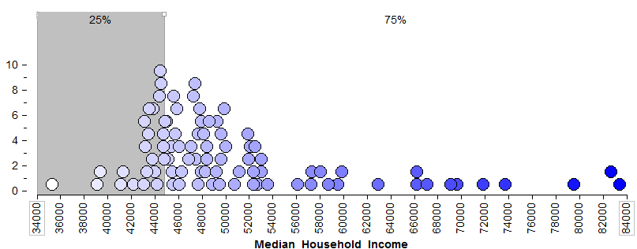
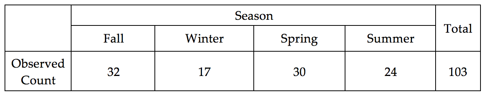
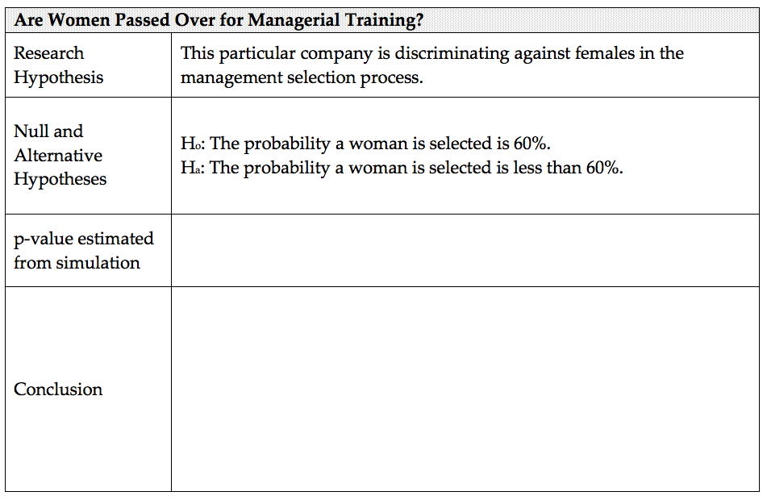
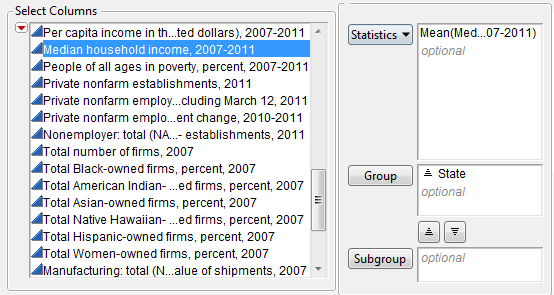
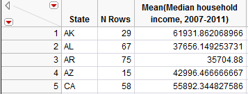
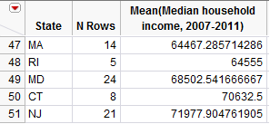
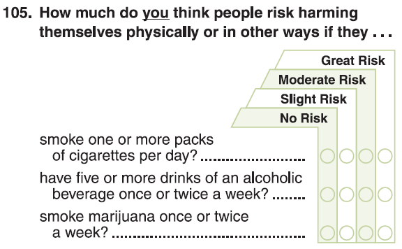
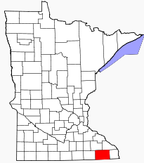

Chapter 1 Malone¶
Chapter 1: Introduction to Statistical Thinking
Section 1.1: Evaluating a Claim of Hearing Loss
Example 1.1: Insurance Fraud - Deafness
Source: http://www.independent.co.uk
Consider the following case study centered on potential insurance fraud regarding deafness. This case study was presented in an article by Pankratz, Fausti, and Peed titled “A Forced-Choice Technique to Evaluate Deafness in the Hysterical or Malingering Patient.” Source: Journal of Consulting and Clinical Psychology, 1975, Vol. 43, pg. 421-422. The following is an excerpt from the article:
*The patient was a 27-year-old male with a history of multiple hospitalizations for idiopathic convulsive disorder, functional disabilities, accidents, and personality problems. His hospital records indicated that he was manipulative, exaggerated his symptoms to his advantage, and that he was a generally disruptive patient. He made repeated attempts to obtain compensation for his disabilities. During his present hospitalization he complained of bilateral hearing loss, left-sided weakness, left-sided numbness, intermittent speech difficulty, and memory deficit. There were few consistent or objective findings for these complaints. All of his symptoms disappeared quickly with the exception of the alleged hearing loss. *
| To assess his alleged hearing loss, testing was conducted through earphones with the subject seated in a sound-treated audiology testing chamber. Visual stimuli utilized during the investigation were produced by a red and a blue light bulb, which were mounted behind a one-way mirror so that the subject could see the bulbs only when they were illuminated by the examiner. The subject was presented several trials on each of which the red and then the blue light were turned on consecutively for 2 seconds each. On each trial, a 1,000-Hz tone was randomly paired with the illumination of either the blue or red light bulb, and the subject was instructed to indicate with which light bulb the tone was paired. Because the researchers were implementing a “forced-choice” technique, the subject was forced to answer each time with either “red” or “blue.” |  |
|---|---|
Understanding Outcomes
| Situation A |
|
||||||||
|---|---|---|---|---|---|---|---|---|---|
| Situation B |
|
Questions:
- What can be said about an individual whose outcomes are similar to Situation A? Discuss.
- What can be said about an individual whose outcomes are similar to Situation B? Discuss.

Consider one final set of outcomes.
| Situation C |
|
||||||||
|---|---|---|---|---|---|---|---|---|---|
Question:
- What can be said about this individual in terms of their ability to hear? Discuss.
Statistical methods can be used to help fight against insurance fraud. In this situation, it is necessary to determine whether or not the subject in this investigation is intentionally giving the wrong answers. In order to make a determination of this nature, we must first gain an understanding of likely versus unlikely outcomes. A simulation model can be used to identify likely outcomes given a particular situation.
Modeling Deaf Outcomes
A simulation model will be constructed to mimic the outcomes of a deaf person. This model requires the identification of two pieces of information.
- Number of completed trials
- The likelihood or chance of obtaining a correct response
For our example, the number of completed trials is 20, and the chance of obtaining a correct response for a deaf person is 1 out of 2, or 50%.
| Necessary information for building a model | Deaf Example |
|---|---|
|
20 |
|
1 out of 2; i.e., \frac{1}{2} |
| Definition |
|---|
| The *expected* outcome is the outcome which is identified as the most likely outcome. |
The expected outcome for the number of correct responses for 20 trials with each trial having a \frac{1}{2} chance of being correct is 10.
The expected value for a model with a \frac{1}{2} chance of being correct will be in the middle; i.e., halfway across the number line representing the number correct.

The most important element that a statistical approach provides to solving a problem of this nature is an understanding of the inherent variation that exists in the outcomes from the simulation model. In particular, there is inherent variation (i.e., randomness) present in the number of correct responses over repeated trials. The amount of inherent variation depends on the model being used. In this situation, the number of trials and the likelihood of a correct response determine the amount of inherent variation.
The amount of inherent variation can be discovered using an appropriately selected random device. A variety of software technologies have been developed to construct simulation models, and some type of random device is a necessary part of their development. For this simple type of experiment, however, a fair coin is sufficient for determining the amount of inherent variation in the outcomes of interest.
| (Optional) Constructing the simulation model via fair coins | ||||||
|---|---|---|---|---|---|---|
|

As an alternative to repeatedly flipping a fair coin, an applet has been constructed so that you can conduct your own repeated trials of this hearing experiment.
Applet Link: http://course1.winona.edu/cmalone/afc_hearing/
Recall that the goal is to mimic the outcomes of a deaf person. Therefore, when conducting this experiment, you should mute the speakers on your computer.
Task: Conduct 20 repeated trials of the hearing experiment. Record the number of correct results below.
Collect the simulation outcomes from everybody in the class. Place a dot for each outcome on the following number line.
Example dotplot |
|---|
Questions:
- Circle your dot on the plot above. Answer the following regarding
your dot.
- How many correct did you get? How many could you have gotten correct?
- Is your dot (i.e., outcome) similar to the others in your class? Discuss.
- Which of the following is true about these dots?
- These dots are meant to mimic the outcomes of deaf people.
- These dots are meant to mimic the outcomes of people who are thought to be lying about their ability to hear.
- Given the simulation results on the above dotplot, what would you
think about a subject’s claim that he suffers hearing loss if he
answered
- 7 correctly?
- 0 or 1 correctly?
- 3 or 4 correctly?
Evaluating Evidence
In the actual study, the subject was asked to complete 100 trials (instead of 20 trials as was done above). The graphic below was obtained using a computer to simulate the possible outcomes of a deaf person (i.e., a guessing subject). Each time the experiment was simulated the number of correct trials was counted and recorded. This process was repeated several times, and the results are shown below.
Outcome from Study |
 |
|---|---|
| Likely Outcomes from a Deaf Person |  |
Questions:
- The subject gave the correct answer in 36 of the 100 trials. What do you think about the subject’s claim that he suffers from hearing loss?
- Complete the following fictitious medical records form for this subject. Provide a written justification to support your decision.
- Your friend makes the following statement. “This subject got too few correct in this hearing test. So, obviously, this person suffers from complete hearing loss!” Why is this statement incorrect?
Section 1.2: Applications of 2-AFC in Forensic Sciences
Questions:
Suppose the suspect had no knowledge of the victim and thus was merely guessing the answers to the 20 questions. How many questions would you expect the suspect to answer correctly?
- At what point would you start to believe the suspect was intentionally giving incorrect answers in order to make the investigators believe they had no knowledge of the crime?

Note that the even if the observed number of correct answers is less than would be expected, this is not necessarily enough statistical evidence to support the suspect’s guilt.
A key question is how to determine whether an individual’s score on the 20-question binary type quiz is surprising under the assumption that they are simply guessing on each question. To answer this question, we will simulate the process of guessing on 20 binary outcomes several times. Each time we simulate the process, we’ll keep track of how many questions the suspect answered *correctly* (note that you could also keep track of the number of incorrect answers). Once we’ve repeated this process several times, we’ll have a pretty good sense for what outcomes would be very surprising, or somewhat surprising, or not so surprising under the situation that an individual is really guessing.
Various technologies can be used for these simulations. For example, the web page
http://course1.winona.edu/cmalone/2afc/
has been specifically set up for 2-alterative forced choice simulations. For this simulation, you should specify the labels for the two outcomes and specify the number of repeated trials.
Click Run > to obtain the outcome from a single simulation.
Use the simulation on this web page to obtain 20 outcomes. For each simulation, record the number of correct and plot the result on the number line below.
Questions:
How many simulations (i.e. dots) are represented in the above plot?
What outcomes would be very surprising to observe if the suspect is really guessing?
What outcomes would be NOT very surprising to observe if the suspect is really guessing?
Using the results from your 20 simulation, how many of the 20 questions would an individual have to answer correctly in order for you to be convinced they were intentionally giving the wrong answers?
- Ask some of your neighbors at what point they would become convinced that an individual is trying to “throw the police off”?Neighbor 1: ___________ Neighbor 2: _____________
Neighbor 3: ___________ Neighbor 4: _____________
How these cutoff values compare to the one you obtained from your simulation? Discuss.
Consider the following graph from 20 trials.

- Is your graph the same as the one presented above? Should it be exactly the same? Explain why or why not?
- Your friend makes the following statement regarding the graph above. “If the Number of Correct Answers is around 2, 3, 4, or 5; then I believe an individual is intentionally giving wrong answers. Your simulation did not produce any values in this region, so you must have done something wrong in the setup of your simulation.” Do you agree or disagree with this statement? Explain.
- Your friend makes the following statement regarding the graph above. “Ten is the expected number and should be the most common outcome. However, this simulation resulted in eleven being the most common; thus, you must have done something wrong in the setup of your simulation.” Do you agree or disagree with this statement? Explain.
Section 1.3: Using Technologies to Construct Simulation Models
To save time and to gather more simulated results more quickly, a software package called Tinkerplots® can be used to simulate the outcomes obtained in class in Example 1.1. The results from the simulation model can then be used to help us understand what outcomes are likely (or unlikely) to occur. This simulation model will be constructed using the following parameters (i.e., under these conditions).
| Necessary information for building a model | Deaf Example |
|---|---|
|
20 |
|
1 out of 2; i.e., \frac{1}{2} |
Setting up the Spinner in Tinkerplots
Open Tinkerkplots® on your computer. Drag a new Sampler from the tool shelf into your blank document, as shown below.

The default sampler is called a Mixer sampler which simply is a “hat” that contains three objects (two objects labeled as “a” and one object labeled as “b”). Tinkerkplots® gives you various options for the type of sampler to use. For this example, a Spinner sampler will be utilized.
Mixer Sampler (Default)
|
Spinner Sampler
|
|---|---|
| The default labeling for the outcomes on the Spinner are a and b. Re-label the outcomes as Correct and Incorrect. |  |


| Recall that the chance of a deaf person correctly identifying the correct color light bulb is 1 out of 2, or 50%. This value must be specified on our spinner so that the correct simulation model is used. To change the percentages on the spinner, select Show Percent from the drop-down menu in the lower left-hand corner of the spinner and enter the desired percentages. |  |
|---|---|
Two additional changes must be made to the Spinner sampler.
- The Repeat value indicates the number of trials to be completed (change this to 20)
- Change the Draw from 2 to 1
The final setup of the spinner should look as follows.
Questions
- Which of the following is true about the setup of this spinner?
- This spinner is meant to mimic the outcomes of a deaf person.
- This spinner is meant to mimic the outcomes of a person who is thought to be lying about their ability to hear.
Click Run a few more times. Count the number of Correct (out of 20) for each iteration of the simulation and plot this outcome on the number line below. Gather the outcomes from a few classmates in class. Does the overall trend appear to mimic the outcomes we obtained in class?
Tinkerplots® has the ability to keep a “history” of the number of correct trials obtained over repeated iterations of the simulation. This feature allows us to more easily record or keep track of the outcomes over several iterations. In order to use this feature in Tinkerplots®, we must first obtain a summary of the outcomes. A plot and count will be used as our summary here.
Drag a new Plot into an open space.
Next, drag the variable to be summarized (i.e., DeafExample) onto the x-axis of the plot as is shown below on the right.
A plot summarizing the results is shown below. This
plot simply separates out the number of Correct responses.
|
 |
|---|---|

{kind=link}
{kind=link}
{kind=link}
{kind=link}
{kind=link}
{kind=link}
{kind=link}
{kind=link}
{kind=link}
{kind=link}
Tinkerplots has the ability to automatically count the number of Correct and Incorrect outcomes. Select the “N” icon from the menu bar.
{kind=link}
Recording the Outcomes over Repeated Iterations *To record the total number of Correct responses for each iteration of the simulation, right-click on the value for the number of Correct in your plot and select **Collect Statistic*.
{kind=link}
| Definition |
|---|
| The *statistic* is a summary measurement computed from collected data. |
The number of Correct responses will now be recorded in the History table provided. To run additional iterations of this simulation, say 27 more to mimic our class size, put 27 in the Collect box and click Collect. This will record the statistic for an additional 27 iterations.
{kind=link}
Comment: The Collect box is used to identify the number of additional times the simulation will be repeated. Each row in the History table represents the number of correct outcomes (out of 20).
Questions
- The number correct for Iteration 1 is 11. Verify this quantity by counting the number of correct guess for this iteration.
- What is the smallest number of correct? For which iteration did this occur? What is the largest number of correct responses?
- The values in the history table should be centered around 10. Why?
***¶
Plotting the Outcomes over Repeated Iterations
Although we can see each individual outcome in the table shown above, it may be better to organize and display these outcomes using a plot.
| Drag a new Plot onto your workspace. Next, click on the variable name from your collection in which the outcomes from the repeated iterations are stored and drag this onto the x-axis of the new plot. |  |
|---|---|
{kind=link}
| In order to see the number of 8’s, 9’s, etc. from each iteration, you should drag any point all the way to the right so that the plot displays the individual numbers. The vertical Stack button can be used to neatly stack the points. Also, the size of the plotting symbol can be reduced with the slider on the bottom of the plot. |  |
|---|---|
{kind=link}
A dotplot showing the outcomes from the 28 repeated iterations from this simulation is shown below.
{kind=link}
Comment:* The lower and upper limit on the number line should be set to 0 and 20, respectively. This communicates the fact that values from 0 to 20 are possible outcomes. The axis limits can be set by double clicking on the smallest axis label and entering 0 for Axis starts at. The upper limit can be set to 20 by double clicking on the largest axis label.
The Collect box can be used to obtain additional outcomes from this simulation model. For example, if the value 100 is entered in the Collect box, the graph will display a total of 128 outcomes. Each dot in this graph corresponds to the number of correct responses out of a possible 20 trials. The outcomes from my simulation model are shown below. |
 |
|---|---|
{kind=link}
{kind=link}
On the number line below, give a rough sketch of the outcomes from your simulation model.
{kind=link}
Questions
- What does each dot on your graph represent? Discuss.
- If an individual is really deaf, what outcomes are we likely to observe?
- What is the smallest value in your dotplot?
________________
- Is it possible to obtain a value smaller than this if more simulations were carried out?
- If one additional simulation is done, is this outcome likely to be smaller, larger, or about the same as the previous smallest value? Discuss.
- A statistician might argue that a plot based on 128 iterations of the simulation is better than a plot based on 28 iterations. Do you agree? Explain.
Questions
- What are the similarities amongst these four graphs?
- What would you consider an unusual outcome (i.e., outlier) to be in Graph A? How about Graph B?
| Developing a Rule for Identifying Outliers |
|---|
| An *outlier rule* determines the location on the distribution for which you begin to believe observations are unlikely. |
*Comments: *
- A statistician might argue that the determination of what constitutes an outlier should not be adversely affected by the number of iterations conducted in the simulation. In fact, if enough iterations of the simulation model are completed, eventually all possible values will appear on the dotplot.
- An outlier rule is used to separate likely from unlikely observations. This is the main goal of obtaining the distribution for the number of correct responses. For example, a statistician might say that a value of 6 or less would be a reasonable outlier rule. Such a rule can and should be applied consistently with any of the graphs shown above.
- In Tinkerplots®, the Divider icon from the tool shelf can be used to count the number of outcomes in a particular region in the graph. For example, there are 539 outcomes at 6 or less.
{kind=link}
Suppose a statistician decides to use 6 or less as the rule for determining when somebody is lying about their ability to hear. This rule would result in accusing a deaf person of lying about \frac{539}{10000} = 0.0539 \approx 5\% , which is about 1 out of every 20 times.
Questions
- Suppose instead of using 6 or less as the rule, 7 or less was used. Would this result in more or less deaf people being identified as lying? Would you advocate changing the rule to 7? Discuss.
- Would an insurance company who fears insurance fraud rather a statistician use the rule of 6 or less or 7 or less? Discuss.
Task:
Set up a spinner in Tinkerplots® as follows to evaluate the subject presented in the article by Pankratz, Fausti, and Peed titled “A Forced-Choice Technique to Evaluate Deafness in the Hysterical or Malingering Patient.” *Source: Journal of Consulting and Clinical Psychology, 1975, Vol. 43, pg. 421-422. *
In this study, the subject was asked to complete 100 trials (instead of 20 as used above). The Repeat value on the spinner should thus be set to 100.
Sketch the final graph obtained in Tinkerplots® for your simulation. |
 | ||||||
|---|---|---|---|---|---|---|---|
Outcome from Study |
 | ||||||
| Likely Outcomes from a Deaf Person |
Number of Correct Responses for a Deaf Person |
{kind=link}
{kind=link}
{kind=link}
Questions:
- If a person is truly deaf, how likely is it that they would obtain 36 or less correct out of 100 trials?
NOT VERY LIKELY | SOMEWHAT LIKELY | LIKELY | VERY LIKELY
- Does your investigation support or refute the notion that the subject under investigation is most likely lying about his ability to hear? Discuss.
Section 1.4: Additional Applications of Two-Alternative Forced Choice Models
Example 1.4.1: Gender Discrimination
This fictitious example involves an evaluation of possible discrimination against female employees. Suppose a large supermarket chain occasionally selects employees to receive management training. A group of female employees has claimed that they are less likely than male employees of similar qualifications to be chosen for this training.
The large employee pool that can be tapped for management training is 60% female and 40% male; however, since the management program began, 9 of the 20 employees chosen for management training were female (only 45%).
Question of Interest: Is there evidence of gender discrimination for those chosen for management training? ** **
*Setting up the Simulation Study*
To investigate this research question, we will carry out a simulation in Tinkerplots 2®. Once again, note that you will have to revise a few elements of the simulation that relate to the following questions:
Questions
- What are the two possible outcomes for each trial?
- What is the chance or probability for each outcome, given that there is no discrimination?
- How many employees were selected for management training?
Use the answer to the above questions to setup the appropriate spinner in Tinkerplots.
{kind=link}
For this problem, it is necessary to change the chance or probability on the spinner to match the situation presented here.
| To specify a proportion different than 50/50, select Show Proportion from the drop down menu on the lower left of the spinner. This is shown here. | Next, change the proportion to the appropriate values. |
|---|---|
 |
 |
The following shows the outcome from one trial.
{kind=link}
Questions
- In this study 20 individuals were selected for management training. The anticipated number of females is *not* 10. It actually larger than 10? What is the anticipated number of females? Explain.
- Propose a formula for determining the anticipated number of females. Use your formula to determine the anticipated number of females if 50 individuals were selected for management training.
The following plot shows the outcomes from 1000 trials.
{kind=link}
Questions
- Under which situation were these dots generated?
- These dots were generated under the situation of possible discrimination against women and that this discrimination was intentional.
- These dots were generated under the situation of possible discrimination against women, but believe the discrimination was unintentional.
- These dots were generated under the situation of no discrimination against women.
Explain your reasoning.
What does each dot on the graph represent?
Using the outcomes from the above simulation of 1000 trials, how many women (out of 20) would you have to see in order to say discrimination is likely occurring? Sketch this cutoff value on the number line below. Explain how you obtained this cutoff value.

- The outcome from this study had 9 women out of 20 selected for management training? Does this outcome provide evidence to suggest discrimination against women is occurring? Explain.
Example 1.4.2: Ear Infections (Source: Rosner)** **A common symptom of otitis media (ear infection) in young children is the prolonged presence of fluid in the middle ear. The hypothesis has been proposed that babies who are breast-fed for at least 1 month may build up some immunity against the effects of the condition. A small study of 24 pairs of babies is set up, where the babies are matched on a one-to-one basis according to age, sex, socioeconomic status, and type of medications taken. One member of the matched pair is a breast-fed baby and the other was bottle-fed.
The primary outcome measurement recorded in this study was the duration (in days) of fluid in the middle ear after the first episode of otitis media. The results from the 24 pairs are below. Of interest is to make comparisons between the breast-fed and bottle-fed babies. These comparisons should be done within each pair of babies because of the auxiliary factors that were considered in this study.
| Who did better in head-to-head comparisons? |
|---|
 |
| Definition |
|---|
|
Count the number of times breast-fed and bottle-fed babies did better and complete the following table.
| Outcome | Number of Pairs |
|---|---|
| Bottle-fed did better | |
| Breast-fed did better | |
| Tie | |
| Total | 24 |
Question
- Pair #8 is a tie, what does this mean in the context of this problem? Does Pair #8 provide evidence for bottle-fed doing better, breast-fed doing better, or neither? Explain.
Consider the following pamphlet on Ear Infections in Children from the Department of Health from the State of New York.
Link to Pamphlet: *http://www.health.state.ny.us/nysdoh/antibiotic/4815.pdf*
{kind=link}
Do a Google search and identify other factors (i.e. called Risk Factors) that are thought to influence the likelihood of a child getting an ear infection.
Mayo Clinic Link: *http://www.mayoclinic.com/health/ear-infections/DS00303/DSECTION=risk-factors*
Question
- What are some of these risk factors? Discuss their potential influence.
Setting Up an Experiment of this Type
Consider the following mock situation. A researcher has obtained 48 volunteers for their study. They have obtained important demographic variables for each of these 48 study participants and ask you to determine how to best match-up these two sets of participants so that comparisons will be done most fairly.
Goal: Propose a matching strategy for this study using the demographic information provided below. (This data is provided on course web site.)
{kind=link}
Question
- Discuss the process used for matching these pairs of babies for this mock experiment.
Consider the following mock study participants. Notice the ages for the bottle-fed babies is considerably higher than the ages for the breast-fed babies.
{kind=link}
Questions
- Suppose Age is known to influence the occurrence of ear infections. Explain why the differences in the ages between the two groups hinders our ability to compare these two groups.
| Definition |
|---|
|
In all our analyses thus far, we have been restricted to only two outcomes. Recall, for this example we have three outcomes: 1) breast-fed better, bottle-fed better, and one tie; as a result, when we construct our spinner in Tinkerplots, we will not include the outcome from the tie.
Questions
- If the tie is removed, how many pairs do we have in our sample?
- If there is no difference in the duration of ear infection between breast-fed and bottle-fed, for how many pairs should the bottle-fed babies do better than the breast-fed babies?
Set up a simulation in Tinkerplots to investigate the situation for which there is no difference between the bottle-fed and breast-fed babies. In your simulation, you should track the number of breast-fed pairs.
{kind=link}
Questions
- What would it mean in the context of this problem, if the outcome from our sample was at the smallest possible value on our graph?
- What would it mean in the context of this problem, if the outcome from our sample was at the largest possible value on our graph?
- Is the outcome from our sample (i.e. 16 pairs for which breast-fed doing better) an outlier? Discuss.
- For this example, we will have two cutoff values. The reason we have two cutoff values is because the original question asked if there was a simply a difference (i.e. no preference to bottle-fed or breast-fed was given).
- Upper cutoff value: _______________
- Lower cutoff value: _______________
- Does the observed outcome from our sample provide enough statistical evidence to suggest breast or bottle fed babies have a lower duration of fluid in their inner ear? Explain.